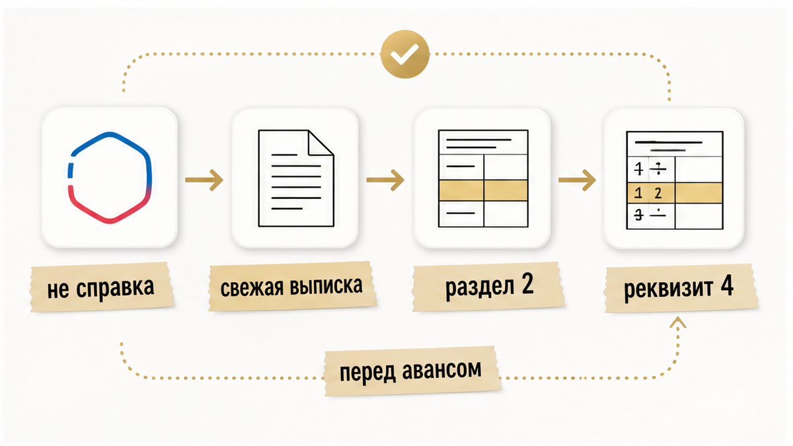
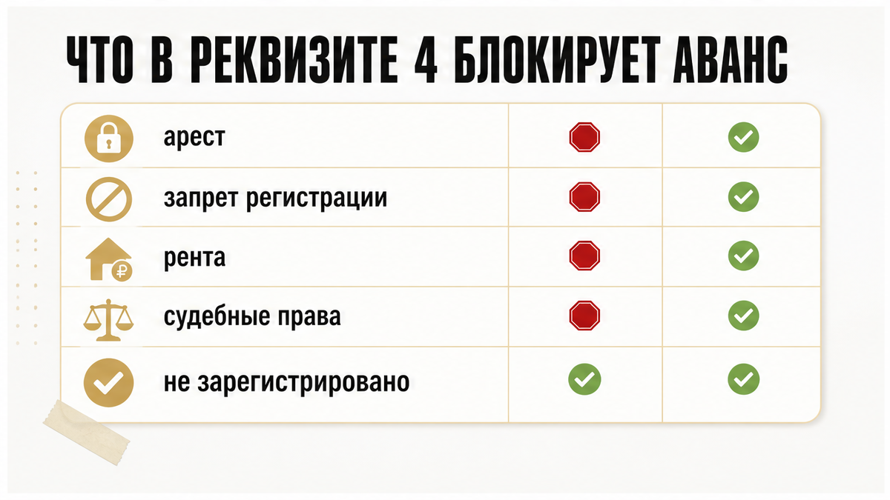
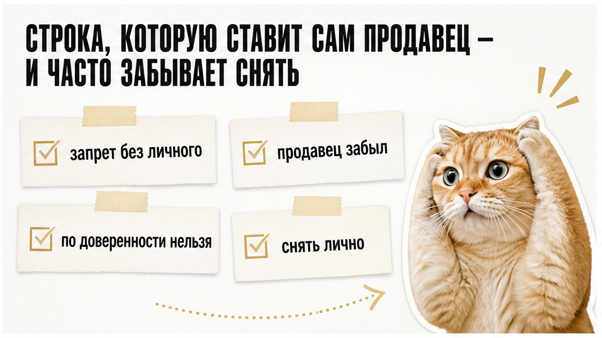
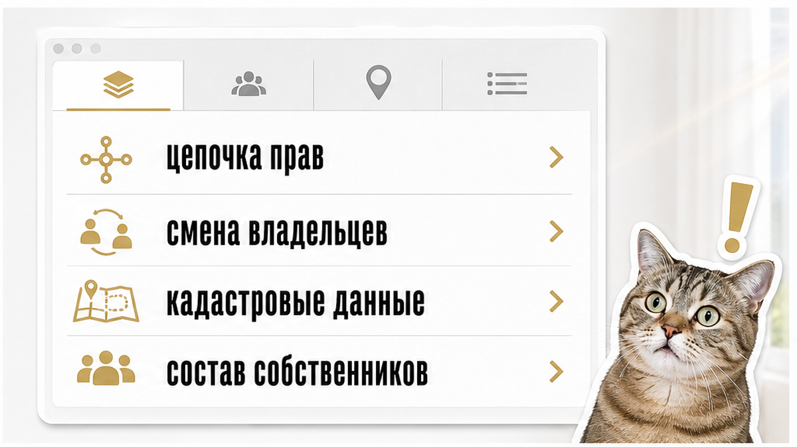
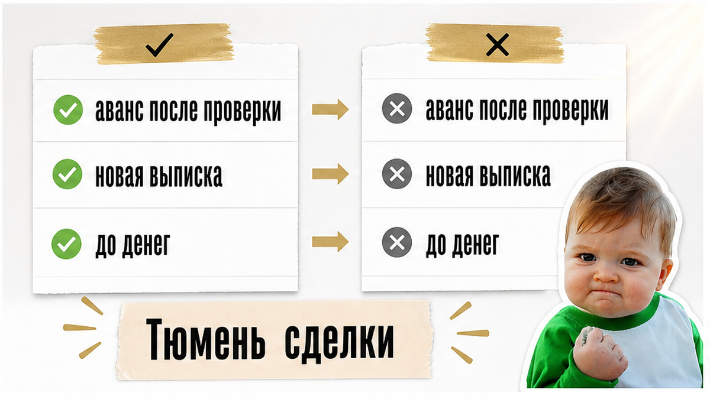

«Выписка чистая, давайте аванс, пока не ушли другие».
Квартира в Тюмени понравилась. Продавец спокойный. Риелтор напротив кивает. В руках — PDF или фраза «всё проверили».
Пока вы не открыли нужный раздел выписки и не прочитали формулировки в реквизите обременений, любой аванс — ставка на чужую память.
Риелтор продавца отвечает на заданные вопросы. Объяснять каждую строку ЕГРН он не обязан.
Я веду сделки в Тюмени от звонка до регистрации. На этом этапе чаще всего слышу одно и то же: «выписку уже смотрели».
Смотрели — но не тот раздел. Или не ту формулировку. Или не свежую.
Расскажу, как это проверяют до аванса — пока ещё можно отойти без суда.
Быстрый инсайт. Нужна полная выписка из ЕГРН, не краткая справка. Смотрите раздел 2, реквизит 4 «Ограничение прав и обременение объекта недвижимости». Если там «не зарегистрировано» — обременений нет. Любая другая строка — разбирать до денег. Свежую выписку заказывают прямо перед авансом: реестр обновляется с задержкой в несколько рабочих дней.
Главная строка этой статьи — «Запрещены регистрационные действия без личного участия собственника». Её часто ставит сам продавец и так же часто забывает снять. Именно она чаще всего всплывает уже после аванса.

«Нам скинули справку — этого хватит?»
Нет.
До аванса нужна выписка из ЕГРН об основных характеристиках и зарегистрированных правах на объект — не краткая справка.
Заказать можно на Госуслугах, через сайт Росреестра или ФКП, в МФЦ.
Для покупателя в Тюмени путь тот же, что по всей России: платная выписка на чужой объект, электронный PDF с подписью Росреестра.
Собственник получает электронную выписку на свой объект бесплатно. Покупателю нужна платная выписка на чужой объект по действующим тарифам пошлины.
Обычный человек видит много страниц PDF.
Риэлтор спрашивает:
«Где раздел 2 и реквизит 4?»
Главный блок для решения «платить или нет» — раздел 2 «Сведения о зарегистрированных правах», реквизит 4 «Ограничение прав и обременение объекта недвижимости» (терминология Росреестра, приказ П/0329).
Если обременений нет, в реквизите 4 указано «не зарегистрировано» — это официальная формулировка Росреестра.
Выписку заказывают свежую непосредственно перед авансом: данные в реестре обновляются с задержкой в несколько рабочих дней после снятия ограничения.
Свидетельство о праве собственности с 2016 года не заменяет запись в ЕГРН. Единственное подтверждение права — запись в реестре.
«У продавца же розовая книжка лежит в шкафу».
Книжка — память. Реестр — право.
Ещё один частый промах: выписка «недельной давности» после снятия ареста или запрета. Продавец показывает PDF, где уже чисто. Росреестр мог ещё не обновить запись — и через несколько рабочих дней в реестре снова появится старая картина, или наоборот: в старой выписке чисто, а арест уже наложен.
Поэтому заказывают выписку не «когда-то на прошлой неделе», а непосредственно перед решением об авансе.
Вердикт: без полной свежей выписки и реквизита 4 разговор об авансе — на словах, не на документе.

«Там же одна строчка, что страшного?»
Страшное — когда вы узнаёте о ней после перевода денег.
Ниже — формулировки, при которых передавать деньги до устранения проблемы нельзя или опасно.
Арест или запрет на совершение регистрационных действий — распоряжение объектом заблокировано (ФССП, суд, долги).
Аванс не вносить: сделка невозможна, пока арест не снят и это не отразится в новой выписке.
«Но продавец же обещал погасить долг до сделки».
Обещание — не снятие ареста. Снятие — новая выписка без этой строки.
Запрещены регистрационные действия без личного участия собственника — любая регистрация без личного присутствия владельца невозможна, в том числе по доверенности.
Аванс не вносить, если планируется дистанционная сделка или представитель. Продавец снимает запрет только лично (МФЦ, Росреестр, Госуслуги), затем нужна новая выписка без этой строки.
Рента (пожизненное содержание с иждивением) — распоряжение только с согласия рентополучателя. Стоп до согласования и юридической проработки.
Обычный человек видит «рента» и думает: редкая история, не про нас.
Риэлтор спрашивает: «Кто рентополучатель и где его согласие?»
Заявленные в суде права требования, если они отражены в выписке — риск оспаривания сделки. Стоп до выяснения статуса спора.
Обычный человек видит слово «ипотека» и пугается так же, как слово «арест».
Риэлтор различает: арест — жёсткий стоп. Ипотека — отдельная история, о ней ниже.
Вердикт: если в реквизите 4 не «не зарегистрировано», каждую строку читают буквально — до аванса.

«Продавец же честный, зачем ему самому себе запрет?»
Как раз поэтому эта строка и опасна.
Формулировка «Запрещены регистрационные действия без личного участия собственника» — массовая отметка: собственник ставит её сам через Госуслуги или МФЦ бесплатно, чтобы защититься от мошенничества с доверенностями.
По данным Росреестра (пересказ в публичных материалах): с января по май 2026 в России подано более 2,5 млн таких заявлений; в Тюменской области за I квартал 2026 — 22 010 запретов.
Типичный сценарий: продавец поставил запрет, забыл про него, уверяет что «всё чисто» — и сделка встаёт на регистрации.
Обе стороны удивляются на финише, хотя выписка была доступна до аванса.
Обычный человек видит спокойного продавца.
Риэлтор видит строку в реквизите 4 и спрашивает: «Вы лично будете на регистрации или по доверенности?»
Если по доверенности — с этой отметкой путь закрыт, пока продавец не снимет запрет лично.
С 6 августа 2026 года на Госуслугах обновили сценарий «Приобретение недвижимости»: онлайн-регистрация с биометрией и УКЭП, при этом запрет можно и поставить, и снять через сервис — отметка остаётся видимым маркером в ЕГРН.
То есть сервис стал удобнее — но строка в выписке по-прежнему читается буквально.
Постановление Президиума ВС РФ № 15А/2026 от 1 июля 2026 (по публикации jurisora.ru 8 июля 2026): при такой отметке Росреестр не регистрирует переход права — даже после подписанного договора купли-продажи.
«Ну подпишем договор — потом разберутся».
Нет. Суд подтвердил: с этой строкой регистрация не пройдёт.
Вердикт: одна забытая отметка собственника валит сделку после аванса. Проверка выписки — до денег, не на регистрации.
Не каждая строка в реквизите 4 означает «бегите».
Некоторые означают «ещё рано платить».
Ипотека или залог в пользу банка — объект в залоге, сделка без согласия залогодержателя невозможна. Это не безусловный стоп, но аванс только после письменного согласия банка или механизма погашения и переоформления, подтверждённого документами.
«У нас же согласие банка будет».
Будет — покажите бумагу. До аванса.
Доли несовершеннолетних и отметки о материнском капитале в истории прав — продажа без разрешения опеки невалидна.
Стоп до разрешения органов опеки, проверки выделения долей и сверки состава собственников в ЕГРН.
В ЕГРН видны доли, но нужны ещё справка ПФР/СФР и разрешение опеки.
«Ребёнку же уже 17».
Возраст смотрят по документам и по доле в выписке, не по ощущению.
Несколько собственников или долевая собственность — нужны подписи и согласия всех правообладателей.
Аванс не вносить, пока участие каждого не подтверждено.
«Один подпишет, второй потом доедет».
Потом — частая точка, где сделка рассыпается.
| Что в выписке | Аванс | Что сделать |
|---|---|---|
| Арест, запрет регистрации, рента, судебные права | Не вносить | Устранить ограничение, новая выписка |
| Запрет без личного участия собственника | Не вносить при дистанционной сделке | Продавец снимает лично, новая выписка |
| Ипотека / залог банку | После документов банка | Письменное согласие или схема погашения |
| Доли детей, маткапитал | После опеки | Разрешение, справка ПФР/СФР, сверка долей |
| Несколько собственников | После подтверждения всех | Согласия и подписи каждого |
Вердикт: ипотека не равна безусловному стопу, но без банковских документов аванс рискован.

Реквизит 4 — не единственная страница, которую открывают до аванса.
Обычный человек смотрит только «есть ли обременения».
Риэлтор смотрит цепочку: кто откуда пришёл и за сколько месяцев сменился владелец.
Для дома с землёй в Тюменской области: с 1 марта 2025 межевание участка обязательно для регистрационных действий (региональное правило; на квартиры в МКД не распространяется).
«Мы же квартиру покупаем, не дом».
Тогда межевание не ваш стоп — но история переходов и состав собственников всё равно ваши.
Частая смена владельцев за короткий срок — не обременение, но сигнал: спросите, почему объект так быстро перепродавали.
Вердикт: выписка — один документ, но в ней несколько мест, где теряют деньги, если читают только реквизит 4.
«Раз в выписке чисто — значит, рисков нет?»
Нет. ЕГРН — мощный, но не всевидящий инструмент.
По разъяснению Росреестра (актуально по смыслу): в ЕГРН не отражены лицо, отказавшееся от приватизации (пожизненное право пользования); завещательный отказ при наследовании; факт прописки — для этого нужна выписка из домовой книги или ЕГРН о зарегистрированных.
Дополнительно до аванса:
ФССП — исполнительные производства продавца. Арест может появиться с задержкой: вчера выписка была чистой, сегодня пристав наложил ограничение.
«Мы же вчера смотрели — там чисто».
Вчера — не аргумент. Свежая выписка плюс ФССП — аргумент.
Банкротство продавца — Федресурс, картотека арбитражных дел.
Доверенность, если сделка через представителя: реестр ФНП, объём полномочий, совместимость с запретом без личного участия.
«Ну бумажка же есть» — про доверенность.
Срок. Объём полномочий. Отозвана ли. Совпадает ли с запретом в ЕГРН.
Контекст для Тюмени в 2026 году: с 1 июля 2026 физлица в России, включая Тюменскую область, могут подавать документы на сделку онлайн при биометрии обеих сторон.
С 1 января 2026 действует досудебное обжалование приостановки регистрации Росреестром — это не отменяет проверку до аванса.
Действующие формы и порядок заполнения выписок — приказ Росреестра П/0329 (редакция от 7 апреля 2026).
Онлайн-подача не означает, что можно не читать PDF. Биометрия ускоряет подачу — не заменяет реквизит 4.
Вердикт: выписка — центр проверки, но не единственный документ до аванса.

Этот текст — ориентир для покупателя, не индивидуальная юридическая консультация.
Каждая сделка тянет за собой свои документы: наследство, развод, маткапитал, доверенность — универсального «всегда так» не бывает.
Ипотека не равна безусловному стопу, но без банковских документов аванс рискован.
Статистику запретов в публичных материалах следует воспринимать как пересказ данных Росреестра, а не как собственный аудит.
Досудебное обжалование приостановки регистрации с 1 января 2026 — инструмент после проблемы. Оно не заменяет проверку до аванса.
Онлайн-подача с биометрией с 1 июля 2026 упрощает подачу документов — но не отменяет чтение реквизита 4.
Проверка не обещает, что суда не будет.
Она обещает, что вы вошли в аванс с открытыми глазами.
Не подписывайте аванс, пока не ясно, куда уйдёт задаток, если сделка сорвётся.
Зафиксируйте в переписке, что вы видели в выписке: дату, реквизит 4, состав собственников. Не «на словах устно».
Если продавец торопит — это не повод пропустить строку. Торопят все, у кого есть что скрыть, и те, кто просто не помнит свой запрет в ЕГРН.
Нет. До аванса нужна полная выписка об основных характеристиках и зарегистрированных правах — с разделом 2 и реквизитом 4.
Это официальная формулировка Росреестра: обременений на объект нет. Это не повод спешить с авансом без проверки истории прав и продавца.
Ипотека — не безусловный стоп, но аванс только после письменного согласия банка или подтверждённой схемы погашения и переоформления.
Только сам собственник лично — через МФЦ, Росреестр или Госуслуги. После снятия нужна новая выписка без этой строки.
Потому что «чистая» без расшифровки реквизита 4 ничего не значит. Продавец может искренне забыть о своём запрете, а риелтор продавца не обязан объяснять каждую строку — он отвечает только на заданные вопросы.
Если в руках выписка, а в реквизите 4 не «не зарегистрировано» — пришлите PDF или скрин раздела обременений в Telegram: https://t.me/Tyumen_Rieltor.
Разберём строки до того, как вы внесёте аванс. Без обещания «нулевого риска» — с понятным планом, что снимать и в каком порядке.
Материал проверен: Святослав Шакин, личный риэлтор в Тюмени. Материал — ориентир для покупателя, не индивидуальная юридическая консультация. Статистику запретов в публичных материалах следует воспринимать как пересказ данных Росреестра, а не как собственный аудит.